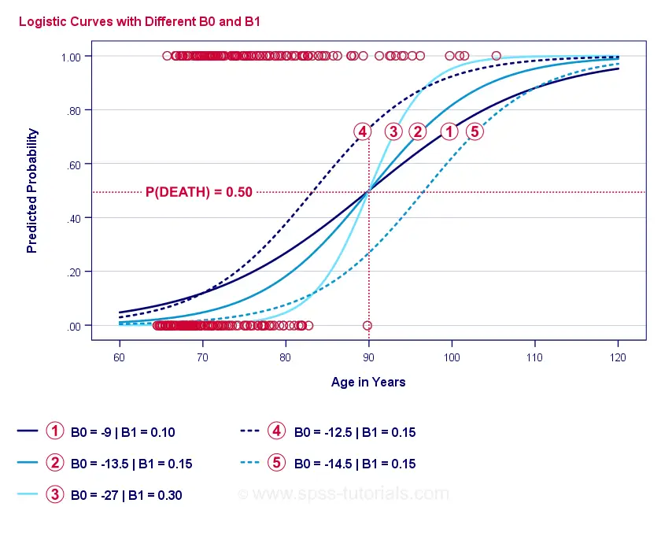

Logistic 回归 – 简单介绍
作者：Ruben Geert van den Berg，归档于 回归分析 & 统计 A-Z
- Logistic 回归方程
- Logistic 回归示例曲线
- Logistic 回归 - B 系数
- Logistic 回归 - 效应量
- Logistic 回归假设
Logistic 回归是一种用于从 1 个或多个预测变量预测二分结果变量的技术。示例：根据人们在 2015 年的年龄，他们有多大可能在 2020 年之前去世？请注意，“去世”是一个二分变量，因为它只有 2 种可能的结果（是或否）。
此分析也称为二元 Logistic 回归或简称为“Logistic 回归”。一种相关的技术是多项 Logistic 回归，它可以预测具有 3 个或更多类别的结果变量。
Logistic 回归 - 简单示例
一家疗养院拥有 N = 284 位客户的性别、2015 年 1 月 1 日的年龄以及客户是否在 2020 年 1 月 1 日之前去世的数据。原始数据位于 此 Googlesheet 中，部分如下所示。
让我们首先关注年龄：我们能否根据 2015 年的年龄来预测 2020 年之前的死亡？如果可以，具体 如何 预测？预测到什么程度？一个好的第一步是检查一个散点图，如下所示。
我们在这个散点图中看到的一些内容是：
- 除了一位 83 岁以上的客户外，所有客户都在未来 5 年内去世了；
- 对于去世的客户，年龄的标准差远大于幸存的客户；
- 年龄具有相当大的正偏度，尤其是对于去世的客户。
但是，我们如何根据客户的年龄来预测他是否去世？我们将通过拟合 Logistic 曲线来实现这一点。
简单 Logistic 回归方程
简单 Logistic 回归计算给定单个预测变量的某个结果的概率，如下所示：
\[P(Y_i) = \frac{1}{1 + e^{\,-\,(b_0\,+\,b_1X_{1i})}}\]
其中
- \(P(Y_i)\) 是对于案例 \(i\)，\(Y\) 为真的预测概率；
- \(e\) 是一个大约为 2.72 的数学常数；
- \(b_0\) 是从数据中估计的常数；
- \(b_1\) 是从数据中估计的 b 系数；
- \(X_i\) 是案例 \(i\) 在变量 \(X\) 上的观察得分。
Logistic 回归的核心是估计 \(b_0\) 和 \(b_1\)。这两个数字使我们能够计算给定任何观察年龄的客户死亡概率。我们将通过添加到先前散点图中的一些示例曲线来说明这一点。
Logistic 回归示例曲线

如果您花一分钟比较这些曲线，您可能会看到以下内容：
- \(b_0\) 决定曲线的水平位置：随着 \(b_0\) 的增加，曲线向左移动，但它们的陡峭程度不受影响。对于曲线 、
 和
和  可以看到这一点。请注意，这些曲线的 \(b_0\) 不同，但 \(b_1\) 相等。
可以看到这一点。请注意，这些曲线的 \(b_0\) 不同，但 \(b_1\) 相等。 - 随着 \(b_0\) 的增加，预测概率也会增加：给定年龄 = 90 岁，曲线 预测大约 0.75 的死亡概率。曲线 和 预测 90 岁客户的死亡概率分别约为 0.50 和 0.25。
- \(b_1\) 决定曲线的陡峭程度：如果 \(b_1\) > 0，则死亡概率随着年龄的增长而增加。随着 \(b_1\) 变大，这种关系变得更强。曲线
 、 和
、 和  说明了这一点：随着 \(b_1\) 变大，曲线变得更陡峭，因此死亡概率随着年龄的增长而更快地增加。
说明了这一点：随着 \(b_1\) 变大，曲线变得更陡峭，因此死亡概率随着年龄的增长而更快地增加。
现在，我们还剩下一个问题：我们如何找到“最佳”\(b_0\) 和 \(b_1\)？
Logistic 回归 - 对数似然
对于每位受访者，Logistic 回归模型都会估计某个事件 \(Y_i\) 发生的概率。显然，如果该事件确实发生了，这些概率应该很高，反之亦然。总结某个模型对于 所有 受访者的表现的一个方法是对数似然 \(LL\)：
\[LL = \sum_{i = 1}^N Y_i \cdot ln(P(Y_i)) + (1 - Y_i) \cdot ln(1 - P(Y_i))\]
其中
- 如果事件发生，则 \(Y_i\) 为 1，如果未发生，则为 0；
- \(ln\) 表示自然对数：您必须将 \(e\) 提高到什么次方才能获得给定的数字？
\(LL\) 是一种拟合优度度量：在其他条件相同的情况下，Logistic 回归模型对数据的拟合程度越高，\(LL\) 就越 大。有点令人困惑的是，\(LL\) 始终为负数。因此，我们想要找到 \(b_0\) 和 \(b_1\)，使 \(LL\) 尽可能接近于零。
最大似然估计
与线性回归相比，Logistic 回归无法轻易计算出 \(b_0\) 和 \(b_1\) 的最佳值。相反，我们需要尝试不同的数字，直到 \(LL\) 不再增加。每次这样的尝试都称为一次迭代。通过这种迭代找到最佳值的过程称为 最大似然估计 (Maximum Likelihood Estimation)。
这基本上就是统计软件（如 SPSS、Stata 或 SAS）获得 Logistic 回归结果的方式。幸运的是，它们在这方面做得非常出色。但这些软件包不是报告 \(LL\)，而是报告 \(-2LL\)。 \(-2LL\) 是一种“拟合不良”度量，它遵循卡方分布。 这使得 \(-2LL\) 可用于比较不同的模型，我们很快就会看到。 \(-2LL\) 在下面的输出中表示为 -2 Log likelihood（-2 对数似然）。

这里的脚注告诉我们，最大似然估计仅需 5 次迭代即可找到最佳 b 系数 \(b_0\) 和 \(b_1\)。因此，让我们现在来看看这些。
Logistic 回归 - B 系数
对于任何 Logistic 回归分析，最重要的输出是 b 系数。下图显示了我们示例数据的 b 系数。
在详细介绍之前，此输出简要显示
构成我们模型的 b 系数； 这些 b 系数的标准误差 (Standard Errors)； Wald 统计量 - 计算为 \(()^2\) - 它遵循卡方分布； Wald 统计量的自由度 (Degrees of Freedom)； b 系数的显著性水平； 指数化的 b 系数或 \(e^B\) 是与预测变量得分变化相关的优势比 (Odds Ratios)； 指数化 b 系数的 95% 置信区间。
b 系数完成了我们的 Logistic 回归模型，现在是
\[P(death_i) = \frac{1}{1 + e^{\,-\,(-9.079\,+\,0.124\, \cdot\, age_i)}}\]
对于一位 75 岁的客户，在 5 年内去世的概率为
\[P(death_i) = \frac{1}{1 + e^{\,-\,(-9.079\,+\,0.124\, \cdot\, 75)}}=\]
\[P(death_i) = \frac{1}{1 + e^{\,-\,0.249}}=\]
\[P(death_i) = \frac{1}{1 + 0.780}=\]
\[P(death_i) \approx 0.562\]
因此，现在我们知道如何根据一个人的年龄来预测 5 年内的死亡。但是这个预测有多好？有几种方法。让我们从模型比较开始。
Logistic 回归 - 基线模型
如果我们没有任何其他信息，我们如何预测谁去世了？嗯，我们样本中的 50.7% 的人去世了。因此，对于 每个人，预测概率都将简单地为 0.507。
出于分类目的，如果 p(事件) ≥ 0.50，我们通常会预测事件发生。由于每个人的 p(死亡) = 0.507，因此我们简单地预测 每个人 都去世了。对于我们样本中死亡的 50.7%，此预测是正确的。
Logistic 回归 - 似然比
现在，从这些预测概率和观察到的结果中，我们可以计算出我们的拟合不良度量：-2LL = 393.65。我们实际的模型 - 根据年龄预测死亡 - 得出 -2LL = 354.20。这些数字之间的差称为 似然比 (Likelihood Ratio) \(LR\)：
\[LR = (-2LL_{baseline}) - (-2LL_{model})\]
重要的是，\(LR\) 遵循卡方分布，自由度 (degrees of freedom) 为 \(df\)，计算公式为
\[df = k_{model} - k_{baseline}\]
其中 \(k\) 表示模型估计的参数数量。如此 Googlesheet 中所示，\(LR\) 和 \(df\) 会导致整个模型的显著性水平。
这里的零假设是，在某个总体中，某个模型预测的效果与基线模型一样差。由于 p = 0.000，我们拒绝这一点：我们的模型（根据年龄预测死亡）的性能明显优于没有任何预测变量的基线模型。 但是，精确地 好多少 呢？这由其效应量 (effect size) 回答。
Logistic 回归 - 模型效应量
评估我们的模型性能的一个好方法是使用效应量度量。一种选择是 Cox & Snell R 2 或 \(R^2_{CS}\)，计算公式为
\[R^2_{CS} = 1 - e^{\frac{(-2LL_{model})\,-\,(-2LL_{baseline})}{n}}\]
遗憾的是，\(R^2_{CS}\) 永远无法达到其理论最大值 1。因此，通常首选称为 Nagelkerke R 2 或 \(R^2_{N}\) 的调整版本：
\[R^2_{N} = \frac{R^2_{CS}}{1 - e^{-\frac{-2LL_{baseline}}{n}}}\]
对于我们的示例数据，\(R^2_{CS}\) = 0.130，这表明中等效应量。 \(R^2_{N}\) = 0.173，略大于中等。
最后，\(R^2_{CS}\) 和 \(R^2_{N}\) 在技术上与线性回归中计算的 r 平方完全不同。但是，它们确实试图发挥相同的作用。因此，这两种度量都称为 伪 r 平方 (Pseudo R-Square) 度量。
Logistic 回归 - 预测变量效应量
奇怪的是，很少有教科书提及任何单个预测变量的效应量。也许是因为这些在 SPSS 中完全不存在。我们需要它们的原因是 b 系数取决于预测变量的（任意）尺度：如果我们输入的是以天而不是年为单位的年龄，则其 b 系数将大大缩小。显然，这使得 b 系数不适合比较不同模型中或之间的预测变量。 JASP 包括部分 标准化 b 系数 (Standardized B-Coefficients)：定量预测变量 - 但不是结果变量 - 作为 z 分数输入，如下所示。
Logistic 回归假设
Logistic 回归分析需要以下假设：
- 独立观察 (independent observations)；
- 正确的模型规范 (correct model specification)；
- 无误差地测量结果变量和所有预测变量 (errorless measurement)；
- 线性：每个预测变量与 \(e^B\)（优势比）呈 线性 相关。
假设 4 有些争议，许多教科书都省略了它 1 , 6 。可以使用 Field 讨论的 Box-Tidwell 检验对其进行评估 4 。这基本上归结为测试每个预测变量及其自然对数或 \(LN\) 之间是否存在任何交互效应。
多元 Logistic 回归
到目前为止，我们的讨论仅限于使用一个预测变量的简单 Logistic 回归。该模型可以很容易地扩展到其他预测变量，从而产生多元 Logistic 回归：
\[P(Y_i) = \frac{1}{1 + e^{\,-\,(b_0\,+\,b_1X_{1i}+\,b_2X_{2i}+\,...+\,b_kX_{ki})}}\]
其中
- \(P(Y_i)\) 是对于案例 \(i\)，\(Y\) 为真的预测概率；
- \(e\) 是一个大约为 2.72 的数学常数；
- \(b_0\) 是从数据中估计的常数；
- \(b_1\), \(b_2\), … ,\(b_k\) 是预测变量 1, 2, … ,\(k\) 的 b 系数；
- \(X_{1i}\), \(X_{2i}\), … ,\(X_{ki}\) 是案例 \(i\) 在预测变量 \(X_1\), \(X_2\), … ,\(X_k\) 上的观察得分。
多元 Logistic 回归通常涉及模型选择和检查多重共线性 (Multicollinearity)。除此之外，它是简单 Logistic 回归的一个相当简单的扩展。
Logistic 回归 - 后续步骤
此基本介绍仅限于 Logistic 回归的要点。如果您想了解更多信息，您可能需要阅读一些我们省略的主题：
- 优势比 (odds ratios) - 在 Logistic 回归中计算为 \(e^B\) - 表示概率如何根据预测变量得分而变化；
- Box-Tidwell 检验检查上述优势比与预测变量得分之间的关系是否为线性；
- Hosmer 和 Lemeshow 检验是整个 Logistic 回归模型的另一种拟合优度检验。
感谢阅读！
参考文献
- Warner, R.M. (2013). Applied Statistics (2nd. Edition) . Thousand Oaks, CA: SAGE.
- Agresti, A. & Franklin, C. (2014). Statistics. The Art & Science of Learning from Data. Essex: Pearson Education Limited.
- Hair, J.F., Black, W.C., Babin, B.J. et al (2006). Multivariate Data Analysis. New Jersey: Pearson Prentice Hall.
- Field, A. (2013). Discovering Statistics with IBM SPSS Statistics . Newbury Park, CA: Sage.
- Howell, D.C. (2002). Statistical Methods for Psychology (5th ed.). Pacific Grove CA: Duxbury.
- Pituch, K.A. & Stevens, J.P. (2016). Applied Multivariate Statistics for the Social Sciences (6th. Edition) . New York: Routledge.